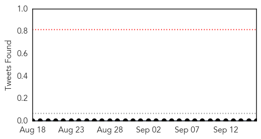
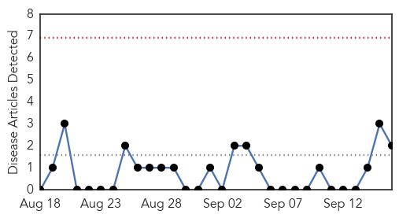

Meningitis
30-Day Web Trend
1 alerts, 0 warnings
30-Day Twitter Trend
0 alerts, 0 warnings

Article Locations
Article Confidences
Top Articles:
- 0.627
- Braunton family urges take up of life-saving vaccine
- 0.608
- Girton mum Sam Patterson urges people to take up free vaccine during Meningitis Awareness Week
- 0.595
- School deep cleans classes and buses after employee contracts viral meningitis
- 0.590
- Hull mum urges parents to make sure their children receive the new meningitis vaccination
Top Tweets:
-
No tweets found for Sep 16, 2015
Mumps
30-Day Web Trend
0 alerts, 0 warnings

30-Day Twitter Trend
4 alerts, 0 warnings

Article Locations

Article Confidences

Top Articles:
Top Tweets:
-
No tweets found for Sep 16, 2015